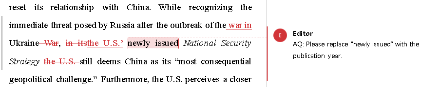

Get in Touch
Email: amalgamediting@outlook.com
Ready to elevate your writing? Contact us for a free consultation and quote. Read on to know more.
—George Bernard Shaw
Revolutionizing editing with a hybrid human and AI approach: Faster, more precise, and meticulously crafted to elevate your written content. Instead of avoiding or concealing AI use, I proudly embrace it as a powerful tool to enhance my editing process. Amalgam Editing combines the precision and speed of AI language models and the expertise and quality control of the human mind — the best of both worlds!

About the Services
Meticulous editing and proofreading services to help you polish your written work to perfection. Whether you're an academic or professional, I ensure your document is clear, concise, and error-free.
Basic Editing
Basic Editing involves editing for spelling, grammar, and punctuation. You can expect a quick turnaround time with this option.
Editing for Fluency
Fluency includes basic editing for spelling, grammar, and punctuation; suggestions for context-based vocabulary alternatives; and suggestions for idiomatic sentence structure.
Editing for Coherence
Coherence offers document-level check for flow and consistency in addition to all those offered in Fluency.
The Plus option
In the Plus ("+") option (Fluency+ and Coherence+), the expert human editor will provide you with detailed comments on explanations for edits, suggestions for alternative sentence structures, and writing tips.
Formatting
Precision formatting ensures your document adheres to specific academic, professional, or publication standards. We meticulously style your document to meet exact journal guidelines, citation formats (APA, MLA, Chicago, etc.), and institutional requirements.
What can you expect from my editing: A few examples
Example 2

Example 2
Example 2
Example 2
Frequently Asked Questions
This is a completely valid concern because English second-language speakers, regardless of their skill and experience in learning the language, may unconsciously make errors while editing, either by missing unidiomatic sentences or by making edits that might sound unnatural to a native speaker.
This is where I use AI to complete my editing process. The latest large language models are well-trained in standard English and are designed to suggest the most natural idiomatic expressions. Of course, these AI suggestions are thoroughly checked by me to ensure that your meaning and tone remain intact.
hrough this hybrid human–AI editing approach, you get the best of both worlds: the precision and speed of AI, along with the insightful expertise and discretion of the human mind.
ChatGPT and similar online AI chatbots are amazing tools and great at writing and editing. However, they do have some limitations. Let's take an example: Consider the sentence "The definition of 1 coulomb changed with time. At the time of writing, the unit of charge is defined such that the elementary charge value is 1.602176634 × 10⁻¹⁹ C", which needs to be edited. Here's how ChatGPT 4o responds:
The edited sentence is grammatically and idiomatically perfect, but here's where the expert human editor can make the critical difference. The edited phrase "As of the time of writing" is fine, but in this context, the definition and value of elementary charge are not subject to frequent changes since they are standard quantities. Although the standards can evolve with advances in science, the phrase used gives the impression that this is frequent occurrence. So, "Currently" is a better alternative. Here's what ChatGPT says when I probe it further:
Here's the workflow. As the middle part is automated, significant time is saved:

We work on a wide array of documents, including books, theses, monographs, reports, and research manuscripts. You can let know what type of document at the time of submitting it, and we will customize the editing process accordingly.
There are no constraints on the format. But note that the AI language model has been implemented to work best on raw text (i.e., without any style formatting and mathematical expressions) in Microsoft Word (.DOCX) format. So, it would be ideal to provide us with the .DOCX file, which is also the most popular document format. Even if your document is in a different format, including TEX, no worries... we can handle them too. We will deliver the final edited document in the format of your choice.
It is quite challenging to set a fixed price for editing because the content of a document, in general, can vary extensively based on the subject matter, the target audience, the style and tone (such as formal or informal), and writing skill level of the author. So, it is always better to quote a price after taking a look at sample text from the document.